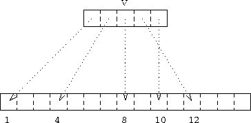

A 1D array can be used to subscript an array in a dimension. Consider:
INTEGER, DIMENSION(5) :: V = (/1,4,8,12,10/)
INTEGER, DIMENSION(3) :: W = (/1,2,2/)

A(V) = 3.5
C(1:3,1) = A(W)A(1) = SUM(C(V,W))
For more information, click here

Now try this question